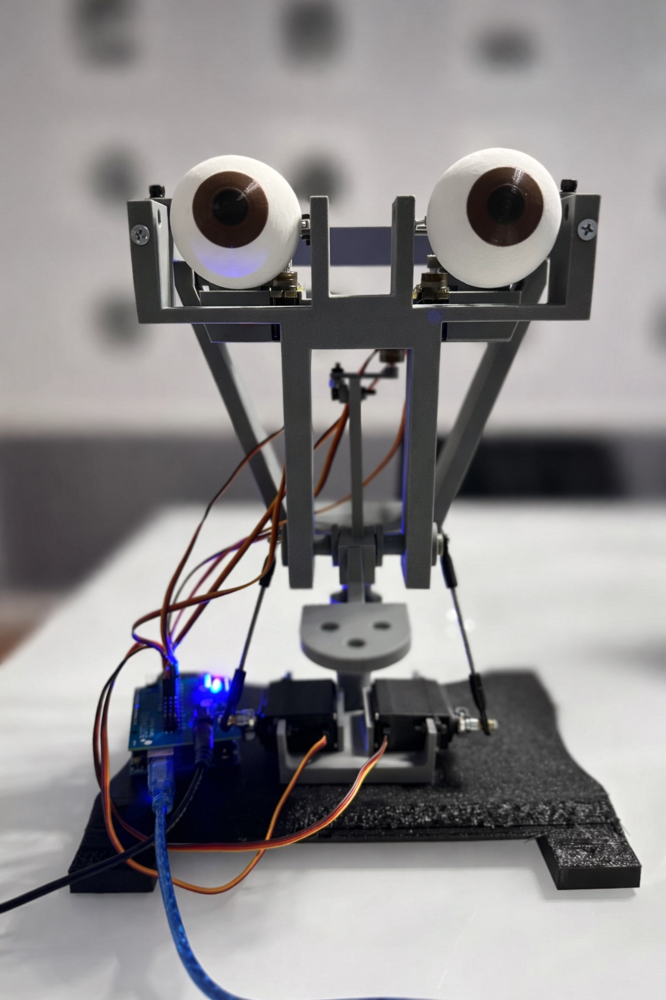
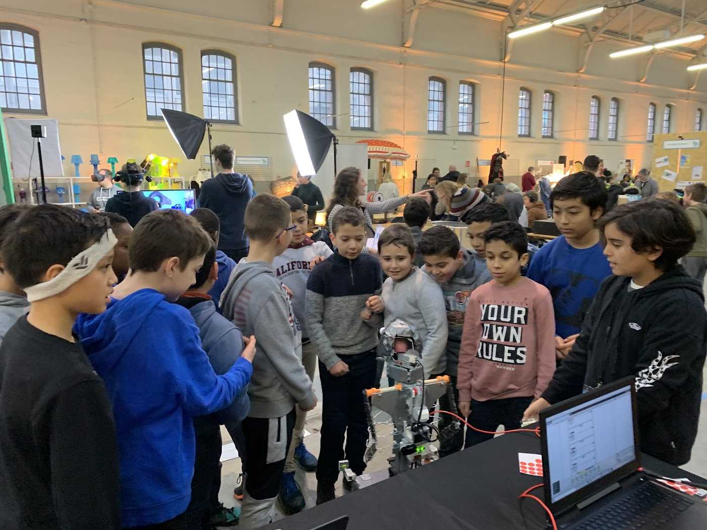
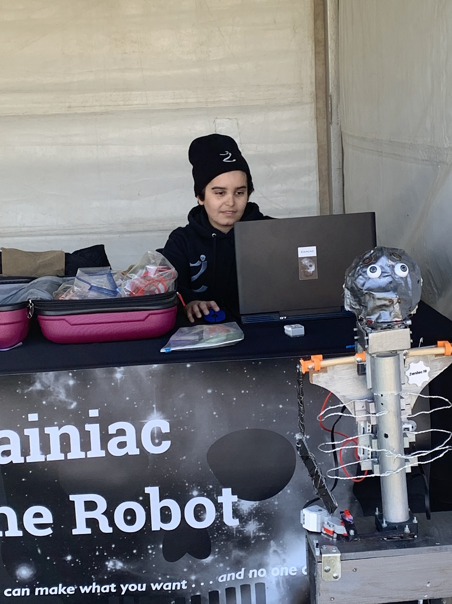

Building robots, flight controls & station hardware.
I’m an aspiring mechanical engineer in Princeton, NJ. I design and build full-scale humanoid robots, 3D-printed animatronics, custom flight simulator controls, and Raspberry Pi dispatch hardware for my local firehouse.
Interactive Project Showcases
Zainiac Series & VEX V5
Three generations of homemade robots—including Zainiac 19, the robot I presented at Maker Faires in Brussels, Philadelphia, Rochester, and Cairo—plus VEX V5 leadership at Princeton Day School.
Flight Sim & Princeton Lab
3D-printed spring-centered flight yoke and 4-section throttle quadrant wired to individual potentiometers, plus my single-sided ATmega328P DCC railroad switch thrower PCB redesign at Princeton University.
Station 46 & Junior Fire
Junior Firefighter and Technology Intern at Montgomery Township Volunteer Fire Co. #2. Built the radio room display and redesigned the department website.

Custom 3D-printed frame and linkage arms replacing 1980s pneumatics.

Exhibiting the 5-foot humanoid build in Belgium (featured on national TV).

Night live-burn and apparatus training with Montgomery Fire Co. #2.

Demonstrating Zainiac 19 across international Maker Faires and conferences.
Where I’ve Been Working
Built the Station 46 radio room Raspberry Pi dashboard + 11" 3D-printed enclosure, redesigned the department website (firestation46.pages.dev ↗), and streamlined Junior Firefighter onboarding.
Redesigned and hand-soldered a modernized single-sided DCC railroad track switch thrower PCB with an onboard ATmega328P microprocessor and dual 4700µF trickle-charged capacitors for Princeton’s microprocessor course.
Leading CAD prototyping and drivetrain engineering at Princeton Day School—finishing 6th of 40+ teams (2025) and Tournament Quarterfinalist (2026).